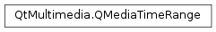

QMediaTimeRange¶
Synopsis¶
Functions¶
- def
__add__(, arg__2) - def
__eq__(, arg__2) - def
__iadd__(arg__1) - def
__iadd__(arg__1) - def
__isub__(arg__1) - def
__isub__(arg__1) - def
__ne__(, arg__2) - def
__sub__(, arg__2) - def
addInterval(interval) - def
addInterval(start, end) - def
addTimeRange(arg__1) - def
clear() - def
contains(time) - def
earliestTime() - def
intervals() - def
isContinuous() - def
isEmpty() - def
latestTime() - def
operator=(arg__1) - def
removeInterval(interval) - def
removeInterval(start, end) - def
removeTimeRange(arg__1)
Detailed Description¶
The
PySide2.QtMultimedia.QMediaTimeRangeclass represents a set of zero or more disjoint time intervals.The
PySide2.QtMultimedia.QMediaTimeRange.earliestTime(),PySide2.QtMultimedia.QMediaTimeRange.latestTime(),PySide2.QtMultimedia.QMediaTimeRange.intervals()andPySide2.QtMultimedia.QMediaTimeRange.isEmpty()methods are used to get information about the current time range.The
PySide2.QtMultimedia.QMediaTimeRange.addInterval(),PySide2.QtMultimedia.QMediaTimeRange.removeInterval()andPySide2.QtMultimedia.QMediaTimeRange.clear()methods are used to modify the current time range.When adding or removing intervals from the time range, existing intervals within the range may be expanded, trimmed, deleted, merged or split to ensure that all intervals within the time range remain distinct and disjoint. As a consequence, all intervals added or removed from a time range must be
normal.
-
class
PySide2.QtMultimedia.QMediaTimeRange¶ -
class
PySide2.QtMultimedia.QMediaTimeRange(arg__1) -
class
PySide2.QtMultimedia.QMediaTimeRange(range) -
class
PySide2.QtMultimedia.QMediaTimeRange(start, end) Parameters: - range –
PySide2.QtMultimedia.QMediaTimeRange - start –
PySide2.QtCore.qint64 - arg__1 –
PySide2.QtMultimedia.QMediaTimeInterval - end –
PySide2.QtCore.qint64
Constructs an empty time range.
Constructs a time range that contains an initial interval,
interval.If
intervalis notnormal, the resulting time range will be empty.Constructs a time range by copying another time
range.Constructs a time range that contains an initial interval from
starttoendinclusive.If the interval is not
normal, the resulting time range will be empty.- range –
-
PySide2.QtMultimedia.QMediaTimeRange.addInterval(interval)¶ Parameters: interval – PySide2.QtMultimedia.QMediaTimeIntervalAdds the specified
intervalto the time range.Adding intervals which are not
normalis invalid, and will be ignored.If the specified interval is adjacent to, or overlaps existing intervals within the time range, these intervals will be merged.
This operation takes linear time.
-
PySide2.QtMultimedia.QMediaTimeRange.addInterval(start, end) Parameters: - start –
PySide2.QtCore.qint64 - end –
PySide2.QtCore.qint64
This is an overloaded function.
Adds the interval specified by
startandendto the time range.- start –
-
PySide2.QtMultimedia.QMediaTimeRange.addTimeRange(arg__1)¶ Parameters: arg__1 – PySide2.QtMultimedia.QMediaTimeRangeAdds each of the intervals in
rangeto this time range.Equivalent to calling
PySide2.QtMultimedia.QMediaTimeRange.addInterval()for each interval inrange.
-
PySide2.QtMultimedia.QMediaTimeRange.clear()¶ Removes all intervals from the time range.
-
PySide2.QtMultimedia.QMediaTimeRange.contains(time)¶ Parameters: time – PySide2.QtCore.qint64Return type: PySide2.QtCore.boolReturns true if the specified
timelies within the time range.
-
PySide2.QtMultimedia.QMediaTimeRange.earliestTime()¶ Return type: PySide2.QtCore.qint64Returns the earliest time within the time range.
For empty time ranges, this value is equal to zero.
-
PySide2.QtMultimedia.QMediaTimeRange.intervals()¶ Return type: Returns the list of intervals covered by this time range.
-
PySide2.QtMultimedia.QMediaTimeRange.isContinuous()¶ Return type: PySide2.QtCore.boolReturns true if the time range consists of a continuous interval. That is, there is one or fewer disjoint intervals within the time range.
-
PySide2.QtMultimedia.QMediaTimeRange.isEmpty()¶ Return type: PySide2.QtCore.boolReturns true if there are no intervals within the time range.
-
PySide2.QtMultimedia.QMediaTimeRange.latestTime()¶ Return type: PySide2.QtCore.qint64Returns the latest time within the time range.
For empty time ranges, this value is equal to zero.
-
PySide2.QtMultimedia.QMediaTimeRange.__ne__(arg__2)¶ Parameters: arg__2 – PySide2.QtMultimedia.QMediaTimeRangeReturn type: PySide2.QtCore.bool
-
PySide2.QtMultimedia.QMediaTimeRange.__add__(arg__2)¶ Parameters: arg__2 – PySide2.QtMultimedia.QMediaTimeRangeReturn type: PySide2.QtMultimedia.QMediaTimeRange
-
PySide2.QtMultimedia.QMediaTimeRange.__iadd__(arg__1)¶ Parameters: arg__1 – PySide2.QtMultimedia.QMediaTimeRangeReturn type: PySide2.QtMultimedia.QMediaTimeRangeAdds each interval in
otherto the time range and returns the result.
-
PySide2.QtMultimedia.QMediaTimeRange.__iadd__(arg__1) Parameters: arg__1 – PySide2.QtMultimedia.QMediaTimeIntervalReturn type: PySide2.QtMultimedia.QMediaTimeRangeAdds the specified
intervalto the time range and returns the result.
-
PySide2.QtMultimedia.QMediaTimeRange.__sub__(arg__2)¶ Parameters: arg__2 – PySide2.QtMultimedia.QMediaTimeRangeReturn type: PySide2.QtMultimedia.QMediaTimeRange
-
PySide2.QtMultimedia.QMediaTimeRange.__isub__(arg__1)¶ Parameters: arg__1 – PySide2.QtMultimedia.QMediaTimeRangeReturn type: PySide2.QtMultimedia.QMediaTimeRangeRemoves each interval in
otherfrom the time range and returns the result.
-
PySide2.QtMultimedia.QMediaTimeRange.__isub__(arg__1) Parameters: arg__1 – PySide2.QtMultimedia.QMediaTimeIntervalReturn type: PySide2.QtMultimedia.QMediaTimeRangeRemoves the specified
intervalfrom the time range and returns the result.
-
PySide2.QtMultimedia.QMediaTimeRange.operator=(arg__1) Parameters: arg__1 – PySide2.QtMultimedia.QMediaTimeIntervalReturn type: PySide2.QtMultimedia.QMediaTimeRangeSets the time range to a single continuous interval,
interval.
-
PySide2.QtMultimedia.QMediaTimeRange.__eq__(arg__2)¶ Parameters: arg__2 – PySide2.QtMultimedia.QMediaTimeRangeReturn type: PySide2.QtCore.bool
-
PySide2.QtMultimedia.QMediaTimeRange.removeInterval(interval)¶ Parameters: interval – PySide2.QtMultimedia.QMediaTimeIntervalRemoves the specified
intervalfrom the time range.Removing intervals which are not
normalis invalid, and will be ignored.Intervals within the time range will be trimmed, split or deleted such that no intervals within the time range include any part of the target interval.
This operation takes linear time.
-
PySide2.QtMultimedia.QMediaTimeRange.removeInterval(start, end) Parameters: - start –
PySide2.QtCore.qint64 - end –
PySide2.QtCore.qint64
This is an overloaded function.
Removes the interval specified by
startandendfrom the time range.- start –
-
PySide2.QtMultimedia.QMediaTimeRange.removeTimeRange(arg__1)¶ Parameters: arg__1 – PySide2.QtMultimedia.QMediaTimeRangeRemoves each of the intervals in
rangefrom this time range.Equivalent to calling
PySide2.QtMultimedia.QMediaTimeRange.removeInterval()for each interval inrange.
© 2018 The Qt Company Ltd. Documentation contributions included herein are the copyrights of their respective owners. The documentation provided herein is licensed under the terms of the GNU Free Documentation License version 1.3 as published by the Free Software Foundation. Qt and respective logos are trademarks of The Qt Company Ltd. in Finland and/or other countries worldwide. All other trademarks are property of their respective owners.